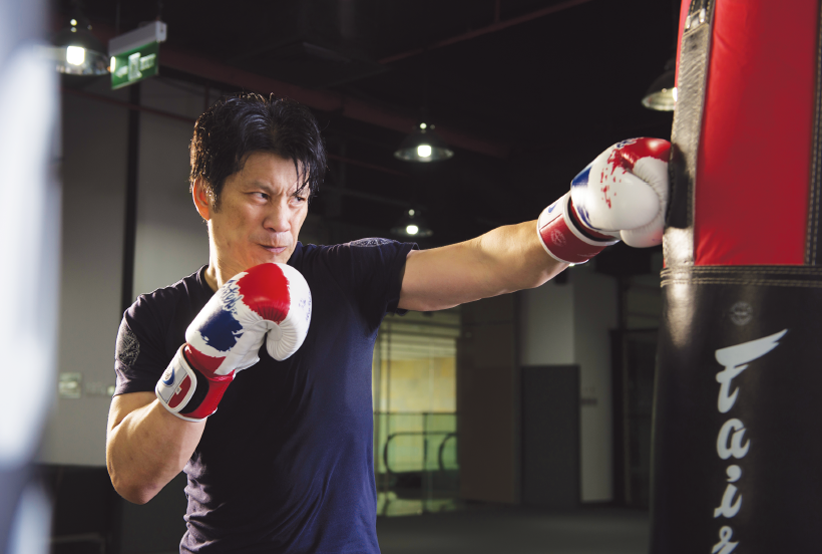
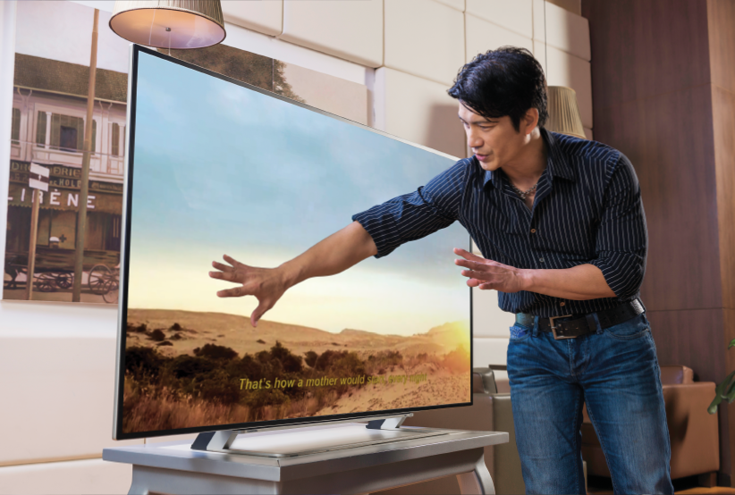
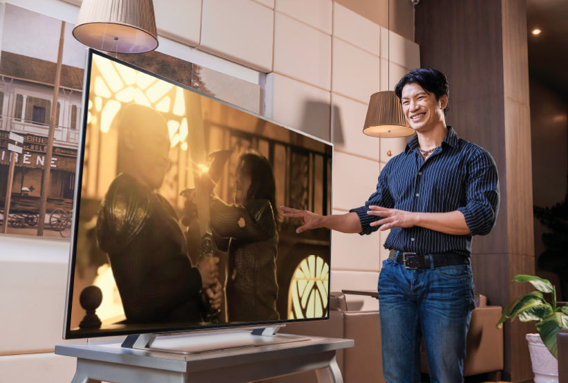

Dustin Nguyễn – Thế nào là sự chuyên nghiệp?
“Tôi cần tập thêm một chút nữa, bạn cứ tự nhiên đi xem một vòng,” Dustin Nguyễn vui vẻ mời người viết bài đi thăm phòng gym của anh, mặc dù chúng tôi chỉ mới gặp nhau lần đầu. Nam diễn viên/đạo diễn người Mỹ gốc Việt quay lại tiếp tục với bài tập của mình, cơ bắp căng lên mỗi lần anh đấm vào bao cát đầy quyết tâm và nghiêm túc như đang chiến đấu trong một cảnh phim. Khó ai có thể tin được Dustin Nguyễn giờ đã qua tuổi năm mươi.
Sau khi hoàn thành bài tập, Dustin vừa giãn cơ vừa trò chuyện về nghề nghiệp, thói quen rèn luyện, cũng như sự chuyên nghiệp trong công việc. Dù không phải là một võ sư chuyên nghiệp, Dustin vẫn luôn duy trì cường độ luyện tập nặng, để luôn khoẻ khoắn cả về thể chất và tinh thần.

Là một diễn viên chuyên nghiệp, Dustin Nguyễn luôn chú trọng rèn luyện để thể hiện tốt từng vai diễn.
“Đối với một diễn viên, sự chuyên nghiệp không thể hiện ở điều gì dao to búa lớn, mà chính ở sự cố gắng mỗi ngày. Tập luyện hàng ngày để luôn khoẻ mạnh, luôn cố gắng làm tốt hơn mọi việc, luôn sẵn sàng cho mọi công việc được giao là cách tôi rèn luyện sự chuyên nghiệp của mình,” anh nói.
Là một diễn viên, nhà biên kịch, đạo diễn chuyên nghiệp ở cả môi trường điện ảnh Hollywood khắc nghiệt và tại Việt Nam, Dustin Nguyễn hiểu hơn ai hết tinh thần chuyên nghiệp thực sự không chỉ là việc chăm chút cho vẻ ngoài, mà còn là sức mạnh tinh thần, khả năng đặt ra các mục tiêu, giữ trọn niềm tin và làm hết sức mình để đạt được mục tiêu đó.
TOSHIBA Pro Theatre – Chất lượng chuyên nghiệp từ cải tiến công nghệ
Sau khi hoàn tất bài tập, Dustin Nguyễn đón tiếp người viết tại phòng khách nhà riêng và vui vẻ giới thiệu một sản phẩm công nghệ mà anh rất yêu thích, tivi Pro Theatre L94. Là dòng tivi 4K mới được tung ra gần đây của Toshiba, Pro Theatre L94 là siêu phẩm có chất lượng chuyên nghiệp mà hãng Toshiba rất tự hào.
“Điều tôi thích nhất khi xem phim của mình bằng tivi Pro Theatre là tôi có thể nhớ lại chính xác từng chi tiết nhỏ mà tôi đã định quay hay thể hiện khi đó”. Như thể muốn chứng minh điều đó, Dustin làm người viết ngạc nhiên khi kể lại từng chi tiết nhỏ nhất của từng cảnh quay, từ diễn xuất của các diễn viên cho đến bề mặt da của từng người và màu sắc cảnh vật xung quanh.
“Quan niệm của tôi khi đạo diễn hay sản xuất phim là trước khi bắt đầu, tôi luôn biết chính xác những gì mình muốn quay, cảm xúc muốn người xem cảm nhận được và làm thế nào để lay động trái tim họ. Nên nếu khán giả xem phim của tôi qua tivi, tôi mong muốn tivi đó phải có chất lượng thực sự chuyên nghiệp để có thể truyền tải hết những gì tôi muốn thể hiện. Toshiba L94 chính là một tivi như vậy.”

Cũng như cách mà Dustin theo đuổi sự chuyên nghiệp trong công việc, nhãn hàng TOSHIBA – với lịch sử hơn 130 năm dẫn đầu về công nghệ với những dấu mốc như phát minh ra chiếc tivi màu đầu tiên ở Nhật Bản - cũng không ngừng theo đuổi sự sáng tạo và chất lượng chuyên nghiệp cho từng sản phẩm. Từ những ngày đầu thành lập, TOSHIBA đã không ngừng phấn đấu để truyền tải tối đa những hình ảnh và cảm xúc chân thật nhất qua từng sản phẩm. Với tinh thần đó, dòng sản phẩm TOSHIBA L94 đã được trang bị CEVO 4K, công nghệ xử lý hình ảnh thế hệ thứ 3 cho chất lượng hình ảnh sống động tuyệt vời. Cũng không có gì ngạc nhiên khi biết tivi 4K đầu tiên trên thế giới được chính hãng TOSHIBA giới thiệu vào tháng 12/2011.
Với độ phân giải cao gấp 4 lần tivi Full HD thông thường, Pro Theatre L94 cho phép người dùng tận mắt chiêm ngưỡng từng chi tiết nhỏ nhất của khung hình. Ngay cả khi nội dung truyền hình chưa đạt chuẩn 4K, công nghệ CEVO 4K của Pro Theatre có thể khuyếch đại tối đa chất lượng hình ảnh đến gần chuẩn 4K nhất. Đặc biệt, tấm nền mới High-Brightness Panel giúp làm tăng độ sáng hơn 75% so với thế hệ tivi trước đây, mang đến chất lượng hình ảnh tối ưu. Có thể nói rằng, Pro Theatre L94 chính là siêu phẩm đại diện cho những cải tiến về chất lượng hình ảnh và độ sáng của TOSHIBA, mang đến những cảm xúc chân thật đáng nhớ cho người tiêu dùng Việt Nam.
Khi được hỏi có kế hoạch gì cho Tết, Dustin Nguyễn nói anh sẽ bay ra nước ngoài cho những bộ phim tiếp theo và năm 2015 chắc chắn sẽ là một năm bận rộn với những dự định và kế hoạch cho nghề nghiệp. Dù bận rộn thế nào, Dustin nói anh vẫn sẽ duy trì tập luyện mỗi ngày để duy trì thể lực, sự tinh nhanh và một tinh thần thép. Cũng như anh, TOSHIBA sẽ không ngừng cải tiến công nghệ để đem lại cho người tiêu dùng Việt Nam những sản phẩm tiên phong và có chất lượng chuyên nghiệp thực sự.

“…nếu khán giả xem phim của tôi qua tivi, tôi mong muốn tivi đó phải có chất lượng thực sự chuyên nghiệp để có thể truyền tải hết những gì tôi muốn thể hiện. Toshiba L94 chính là một tivi như vậy,” Dustin Nguyễn nói khi đang xem xét chất lượng TV Toshiba Pro Theatre.